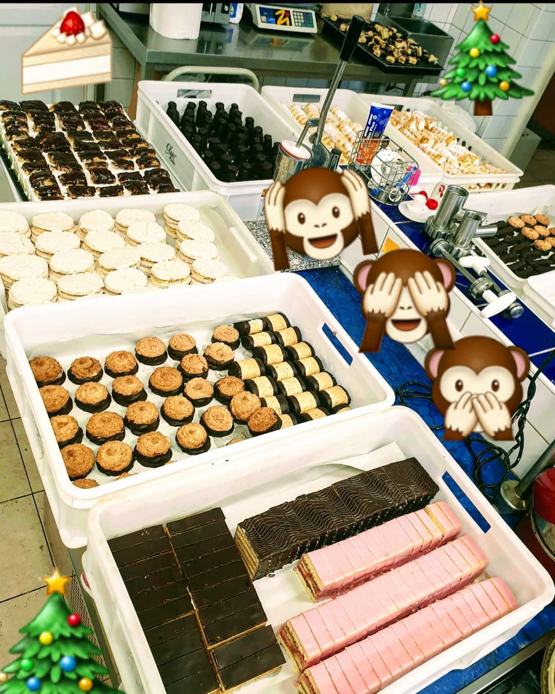

Zázvorníky podľa @vanilia_risnovce — Normy Jedál
Priatelia maškrtnici 😛😛😛cukrareň otvorena do zajtra do 18hodky..samozrejme iba .na vydaj zakuskov alebo kavičky čajiku horucej čokolady so sebou🥤🥤🥤...tešime sa na Vas.
#zasevianoce #nesnezi #krasneprsi #☔️☔️☔️ #obalimesinervy ##domacekremese #staradobraklasika #cukrarenvanilia🙂 #vianocnycas #🎄🎄🎄 #kavickazosebou #coffeetime #☕☕☕ #zakusky #zazvorniky #sladkosticky ..a ine dobrotky